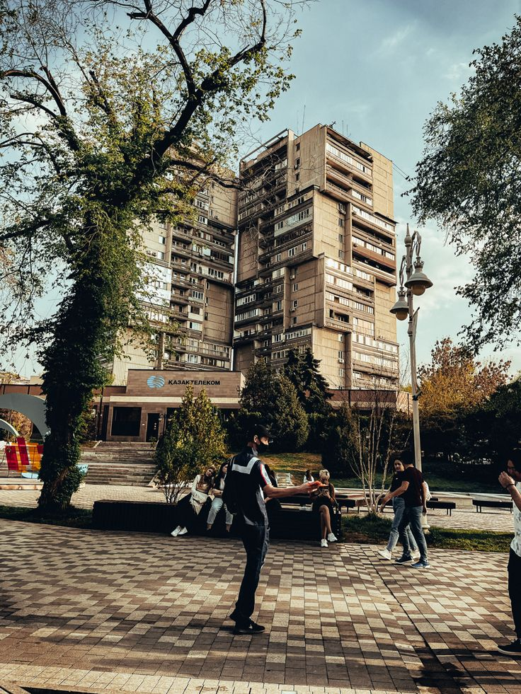
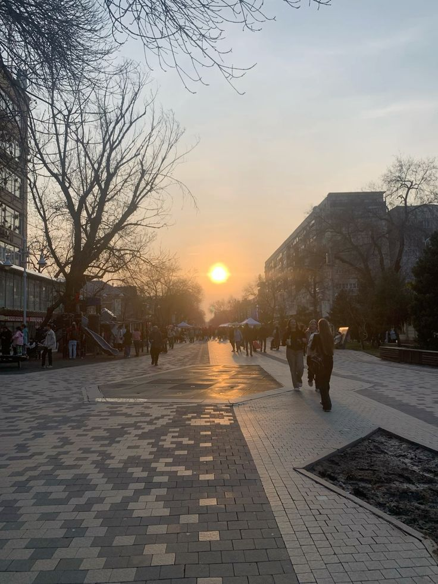

Арбат – Алматы серуенінің жүрегі
Алматылық Арбат – бұл Жібек Жолы жаяу жүргінші көшесі, ол қаланың дәл ортасында орналасқан. Бұл – тұрғындар мен туристердің сүйікті серуендеу, демалу және мәдени өмір орны. Мұнда шығармашылық пен көше өнерінің ерекше атмосферасы орнаған.
- Ұзындығы: шамамен 1 км
- Орналасуы: Жібек Жолы көшесі, Абылай хан мен Назарбаев көшелерінің арасында
- Негізгі ерекшеліктері: субұрқақтар, орындықтар, көше суретшілері, кәдесыйлар
Не көруге және істеуге болады?
- 🎨 Көше суретшілері – портрет немесе пейзаж салып береді
- 🎵 Музыканттар мен әртістер – тірі өнер атмосферасын тудырады
- 🛍 Сауда қатарлары – кәдесыйлар мен қолөнер бұйымдары
- ☕ Көше кафелері мен кофеханалар – таза ауада демалуға таптырмас
- 📸 Фото-аймақтар мен инсталляциялар – Instagram үшін керемет
Қалай жетуге болады?
📍 Алматы орталығы (Жібек Жолы ауданы)
🚇 Жақын метро станциясы: «Жібек Жолы»
🚌 Автобустар: № 2, 32, 65, 98
Кіру бағасы:
💰 Тегін (серуендеу, суретке түсу, көше өнері)
💰 Ақылы – тек жергілікті тауарлар мен қызметтер
Арбат – бұл Алматының жаны. Мұнда қала өмірі, мәдениет пен шығармашылық үйлесім табады! 🖼🎶🌸
ФОТО

